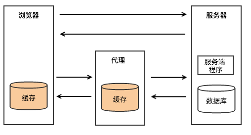

浏览器缓存
一般，浏览器只对GET请求开启缓存。
分为两大类：
- 强缓存：浏览器直接从自己的缓存中读取资源，不会发请求到服务器；
- 协商缓存：当强缓存没有命中的时候，浏览器一定会发送一个请求到服务器，通过服务器端依据资源的另外一些http essay-header验证这个资源是否命中协商缓存，如果协商缓存命中，服务器会将这个请求返回，但是不会返回这个资源的数据，而是告诉客户端可以直接从缓存中加载这个资源，于是浏览器就又会从自己的缓存中去加载这个资源；
两者的区别：
- 强缓存不发请求到服务器，协商缓存会发请求到服务器。
两者的共同点：
- 都是从客户端缓存中加载资源。
浏览器行为对缓存的影响
当ctrl+f5强制刷新网页时，直接从服务器加载，跳过强缓存和协商缓存；
当f5刷新网页时，跳过强缓存，但是会检查协商缓存；
缓存在哪儿？

上图中有三个角色，浏览器、Web代理和服务器。
如图所示Http缓存存在于浏览器和Web代理中。当然在服务器内部，也存在着各种缓存。代理缓存和服务器缓存不予关心。